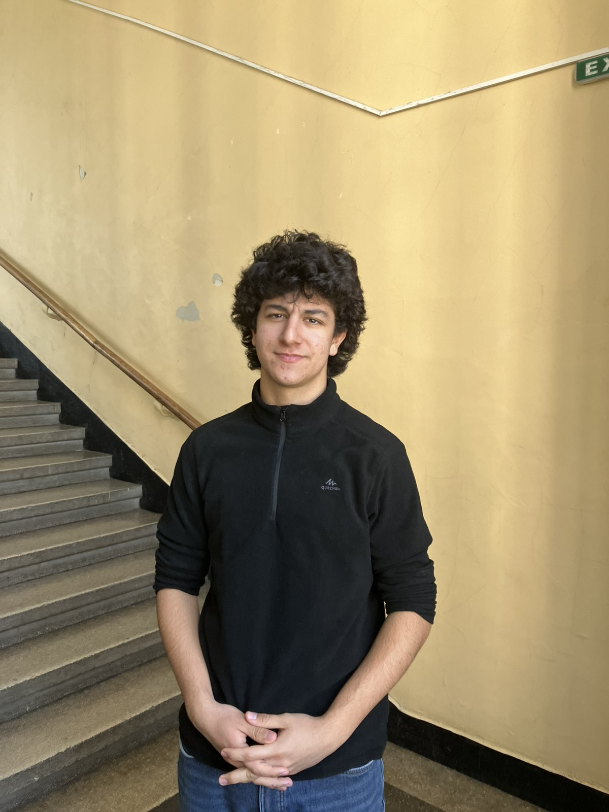
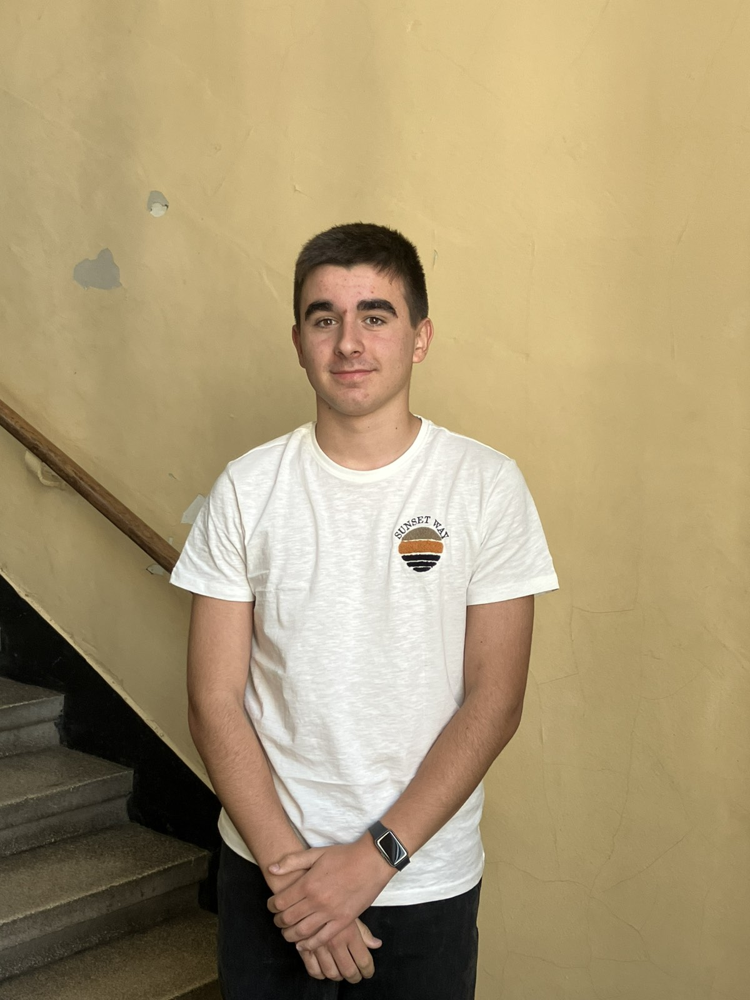

Емил Христов, както Симо, ще работи по онлайн платформата на NextGen Academy. Емо е съученик на Никола и Емо Ангелов в 10а клас, като извън училище с голямо любопитство се занимава с правене на сайтове , създаване на програми и фитнес. Тези негови умения, както и подкрепата, която дава на своя екип, са от ключово значение за добрата работа и бъдещите успехи на идеята ни за лекции на теми, от които се вълнуват тийнейджърите в днешно време. Емил се залавя за работа и обещава, че ще поддържа информираността за нашата работа и извън пределите на гимназията.
Емил Ангелов
Запознайте се с човека, в чиято глава първоначално се роди идеята за нашия проект. Емил Ангелов, отново в 10а клас на ППМГ, застава на позицията изпълнителен директор – сърцето на отбора и душата на компанията. Това е човекът, който ще отговаря за поддържането на единността и сплотеността на екипа. Със своите изявени лидерски качества той умело ще насърчава дейността на своите съотборници, но същевременно и ще помага, защото винаги пази гърбовете на хората, които обича.

Симеон Димов
Симеон Димов е от 10б клас в ППМГ. Той е креативен, ведър и забавен, а умът му никога не спира да работи. Симо, както го наричат приятелите му, е човек с широки познания и завидни умения в областта на програмирането и информационните технологии. Това е и причината той да бъде софтуерен мениджър в NextGen отбора, като се заема с поддръжката и актуализирането на нашия сайт.
Виктор Кондов
Виктор Кондов е перфектното допълнение за нашия иначе пъстър идеен отбор. Ученикът от 10б на ППМГ ще отговаря за популяризирането на нашата идея и цялостния маркетинг на NextGen Academy. В неговите ръце ще бъдат и нашите профили в социалните мрежи. Виктор е креативен, като доказателство за това е нашето оригинално лого, символизиращо активното мислене и желанието за информираност на новото поколение. Комплексното му мислене ще е идеално за оригиналните идеи, с които ще продължим развитието на пилотния ни проект.

Никола Иванов
Представяме Ви нашия продуктов мениджър. Никола Иванов е ученик в 10а клас на ППМГ и се заема с организационната дейност на екипа. Говорейки за себе си, може да каже, че обича подредеността и никога не отказва да помогне, когато някой има нужда. За приятелите си той е човекът, към когото могат да се обърнат за съвет или идея, независимо от момента и ситуацията. Креативен, с голямо сърце и оригинален хумор, Никола е готов да се впусне в трескава подготовка и организация по лекциите на NextGen Academy.